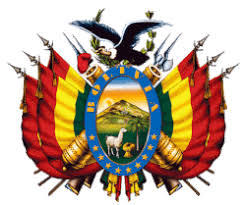
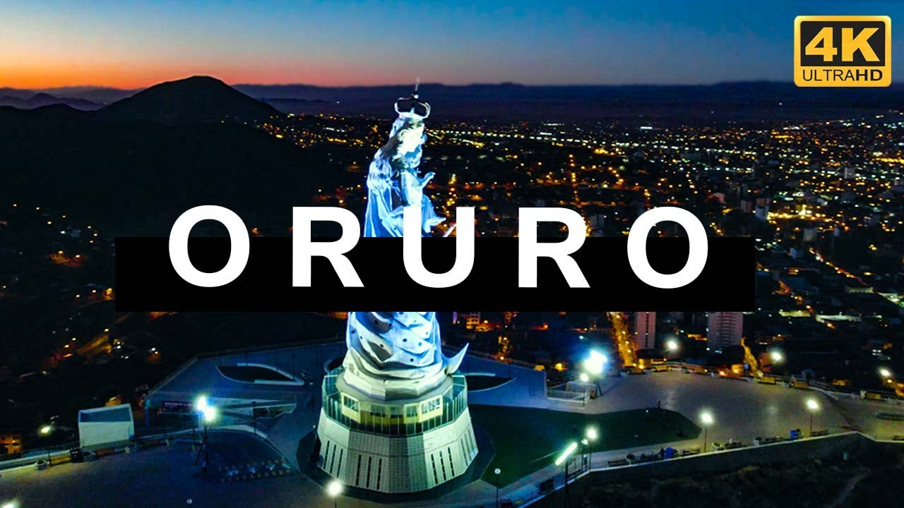

El poder de tus brazos Oruro

Oruro tiene una historia muy antigua que se remonta a tiempos anteriores a la llegada de los españoles. En esta región habitaron pueblos originarios como los urus, aimaras y quechuas. Los urus se asentaban cerca de lagos y ríos y vivían principalmente de la pesca y la recolección, mientras que los aimaras y quechuas desarrollaron la agricultura y el pastoreo. Con el tiempo, el territorio fue incorporado al Imperio inca, que organizó la producción y aprovechó los recursos minerales de la zona. La ciudad de Oruro fue fundada el 1 de noviembre de 1606 con el nombre de Villa Real de San Felipe de Austria. Durante la época colonial, Oruro se convirtió en uno de los centros mineros más importantes del Alto Perú gracias a la explotación de la plata. Esta riqueza atrajo a muchos pobladores, pero también generó desigualdad, abusos y duras condiciones de trabajo para los indígenas, lo que provocó descontento social. En el siglo XVIII, Oruro fue escenario de importantes rebeliones contra el dominio español. En 1781 se produjeron levantamientos en los que participaron tanto indígenas como criollos, reflejando el deseo de libertad y justicia. Estos acontecimientos influyeron en el proceso que años más tarde llevaría a la independencia de Bolivia, lograda en 1825. Al año siguiente, en 1826, se creó oficialmente el departamento de Oruro. Durante la etapa republicana, Oruro continuó siendo fundamental para la economía del país debido a la minería, especialmente por la explotación del estaño, además de la plata y otros minerales. La vida de la ciudad siempre estuvo ligada al trabajo minero, lo que marcó el carácter fuerte y luchador de su población. Con el paso del tiempo, Oruro también se consolidó como un importante centro cultural y religioso. Es conocida en todo el mundo por el Carnaval de Oruro, una de las expresiones folklóricas más importantes de Bolivia, que combina tradiciones ancestrales andinas con la fe católica, especialmente la devoción a la Virgen del Socavón. Hoy, Oruro es símbolo de identidad, historia y cultura, y representa el espíritu de resistencia y fe del pueblo boliviano.En las últimas décadas, Oruro ha enfrentado cambios importantes. La actividad minera siguió siendo relevante, aunque con altibajos debido a los precios internacionales y al agotamiento de algunos yacimientos. Aun así, la minería continúa siendo una fuente de trabajo y parte esencial de la identidad orureña, complementándose con el comercio, la artesanía y los servicios. La ciudad también ha crecido en el ámbito educativo y social, con la formación de profesionales y el fortalecimiento de instituciones culturales. La migración del campo a la ciudad y hacia otras regiones del país ha influido en su desarrollo urbano, generando nuevos barrios y desafíos en infraestructura, empleo y servicios básicos. A pesar de las dificultades económicas y climáticas propias del altiplano, la población de Oruro mantiene vivas sus tradiciones, su fe y su sentido de comunidad. Las fiestas, danzas y costumbres siguen transmitiéndose de generación en generación, reforzando el orgullo por su historia. Hoy, Oruro continúa construyendo su futuro sin olvidar su pasado, conservando una identidad marcada por la resistencia, la devoción y la riqueza cultural que la distingue dentro de Bolivia.